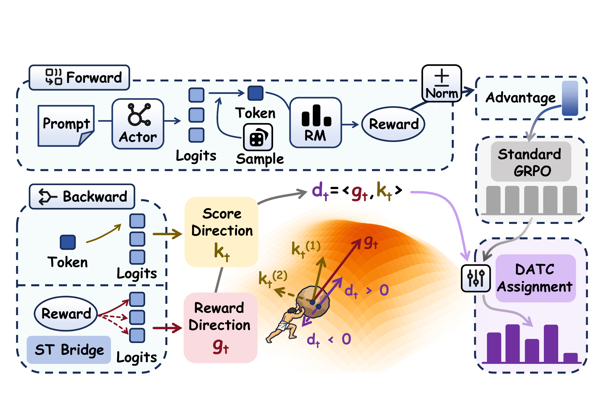
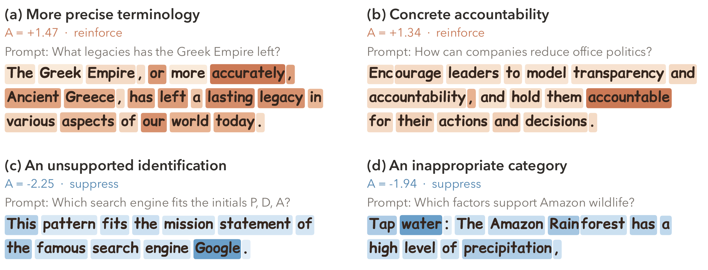
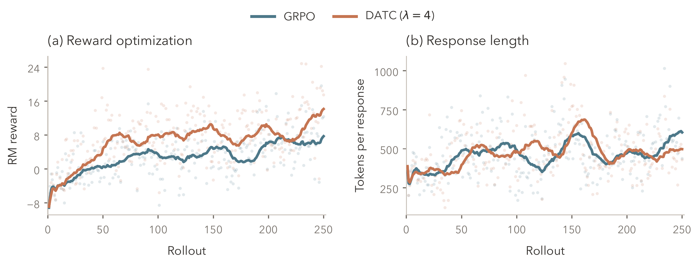
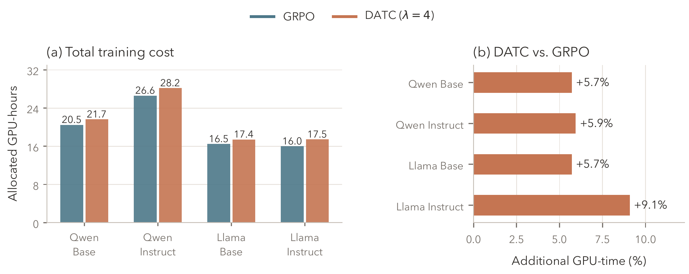

Abstract
GRPO shares a response-level advantage across tokens, leaving unresolved how strongly each token should contribute to learning. Updates induced by the shared advantage reinforce or suppress the sampled token at each position, but these updates do not always point toward increasing reward at the token level. This motivates a work-based view of credit: just as work depends on the component of force along a displacement, token credit should reflect the local reward change along the policy update direction. We introduce Direction-Aware Token Credit Assignment (DATC), which maps frozen reward-model gradients into policy logit space and allocates weights by evaluating the alignment between the reward direction and GRPO’s signed sampled-action update direction, while preserving the sign and mean of the response-level advantage. DATC outperforms GRPO in all four settings across two model families.
Method
DATC replaces the shared token advantage in GRPO with a direction-aware allocation. A frozen reward model provides a local reward direction; its alignment with each sampled-action update determines the token’s weight.

Reward direction
Map the frozen reward model’s input gradient into policy logit space and normalize by the group reward scale.
Directional credit
Take the inner product with the sampled-action score direction. The response advantage determines whether that action is reinforced or suppressed.
Token advantage
A KL-regularized allocation produces positive weights with mean one, preserving the sign and mean of the response-level advantage.
Here, A is the response advantage, T is the response length, and τ controls allocation concentration. The practical allocator standardizes the credit scores and bounds weights between 1/λ and λ.
Main results
We evaluate Base and Instruct initializations of Qwen3-14B and Llama-3.1-8B under matched rollout budgets. DATC improves over GRPO on all four reported metrics in each setting.
| Method | RM-Reward ↑ | AlpacaEval ↑ | Arena-Hard ↑ | MT-Bench ↑ |
|---|---|---|---|---|
| Qwen3-14B · Base | ||||
| Initial | -2.54 | 6.65 | 8.42 | 6.76 |
| SFT | 3.75 | 7.00 | 3.15 | 6.53 |
| GRPO | 10.87 | 37.39 | 28.49 | 7.70 |
| DATC | 13.35 ± 0.16 | 49.57 ± 1.12 | 39.31 ± 1.79 | 7.99 ± 0.05 |
| Qwen3-14B · Instruct | ||||
| Initial | 11.43 | 63.35 | 66.75 | 7.96 |
| GRPO | 13.75 | 72.80 | 73.60 | 8.36 |
| DATC | 14.43 ± 0.09 | 73.66 ± 1.59 | 74.86 ± 1.43 | 8.41 ± 0.09 |
| Llama-3.1-8B · Base | ||||
| Initial | -28.06 | 0.00 | 0.03 | 2.01 |
| SFT | -8.08 | 4.02 | 1.24 | 4.91 |
| GRPO | 4.55 | 9.73 | 2.83 | 5.61 |
| DATC | 11.80 ± 0.39 | 12.58 ± 0.85 | 5.10 ± 0.48 | 5.78 ± 0.06 |
| Llama-3.1-8B · Instruct | ||||
| Initial | -0.26 | 11.47 | 3.02 | 6.81 |
| GRPO | 19.61 | 21.61 | 8.41 | 7.13 |
| DATC | 24.73 ± 1.04 | 27.08 ± 1.25 | 9.35 ± 0.63 | 7.45 ± 0.05 |
DATC reports mean ± standard deviation over three random seeds, with λ = 4. AlpacaEval uses raw win rate (%); Arena-Hard v2.0 uses win rate (%). RM scores should only be compared within the same reward model.
Token-level analysis
For positive-advantage responses, DATC assigns more weight to tokens such as “accurately” and “accountable.” For negative-advantage responses, it concentrates suppression on unsupported or inappropriate expressions, including “Google” and “water” in the examples below.

Credit assignment ablations
Removing directional alignment retains gradient magnitudes but substantially reduces performance. Shuffling the weights also lowers performance, indicating that their correspondence with token positions matters.
| Method | RM-Reward ↑ | AlpacaEval ↑ | Arena-Hard ↑ | MT-Bench ↑ |
|---|---|---|---|---|
| Initial | -2.54 | 6.65 | 8.42 | 6.76 |
| SFT | 3.75 | 7.00 | 3.15 | 6.53 |
| GRPO | 10.87 | 37.39 | 28.49 | 7.70 |
| P2T | 10.96 | 36.40 | 29.68 | 7.66 |
| RED | 6.14 | 13.21 | 22.30 | 6.93 |
| DATC (λ = 4) | 13.35 | 49.57 | 39.31 | 7.99 |
| DATC (λ = 2) | 12.89 | 41.49 | 34.49 | 7.77 |
| DATC (λ = 8) | 12.91 | 45.96 | 37.63 | 7.98 |
| w/o direction alignment | -4.02 | 1.53 | 1.23 | 2.71 |
| w/ shuffled weights | 10.73 | 32.62 | 26.99 | 7.51 |
All rows use the same policy optimization settings. λ controls the bounds on token weights.
Training dynamics and cost
On Llama-3.1-8B-Base, the final 25 rollouts have a mean raw reward of 14.14 for DATC and 7.72 for GRPO, with mean response lengths of 497.9 and 605.2 tokens, respectively.

DATC adds 5.7–9.1% end-to-end GPU time across the four settings, including sampling, scoring, credit computation, and policy updates.
GPU-time comparison across all four settings

Scope. DATC requires reward-model input gradients and aligned actor–RM vocabularies. Experiments study LoRA-based general preference alignment in two model families. The local gain result concerns a first-order surrogate with independent logits.
BibTeX
@misc{hu2026datc,
title = {Direction-Aware Token Credit Assignment
with Reward-Model Gradients},
author = {Yikuan Hu and Jifeng Zhu and Minle Su and
Jiaqin Yue and Gujie Shao and Yanzhe Chen and
Haoxuan Jia and Haoran Xu and Wangzhou Dai},
year = {2026},
note = {Manuscript}
}